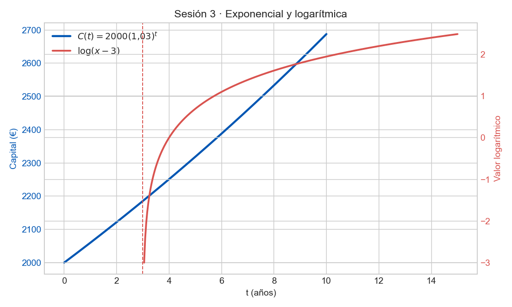

Ejercicio 1 (Modelado)
Depósito de 2.000€ al 3% anual compuesto.
a) Escribe la función del capital tras \(t\) años.
b) Capital a 10 años.
\(C(t)=2000(1{,}03)^t\).
\(C(10)=2000\cdot1{,}3439\approx2687{,}83€\).
Ejercicio 2 (Práctica)
Un coche de 24.000€ se deprecia un 15% anual. Hallar \(V(t)\) y \(V(5)\).
\(V(t)=24000(0{,}85)^t\).
\(V(5)=24000\cdot0{,}4437\approx10648{,}80€\).
Ejercicio 3 (Práctica)
\(P(t)=100\cdot2^t\). ¿Cuánto tarda en llegar a 1600?
\(1600=100\cdot2^t\Rightarrow16=2^t\Rightarrow t=4\) horas.
Ejercicio 4 (Práctica)
Dominio y asíntota vertical de \(f(x)=\log(x-3)\).
\(x-3>0\Rightarrow Dom=(3,+\infty)\). Asíntota vertical en \(x=3\).
C(t)=2000*(1.03)^tV(t)=24000*(0.85)^tP(t)=100*2^tL(x)=log(x-3)